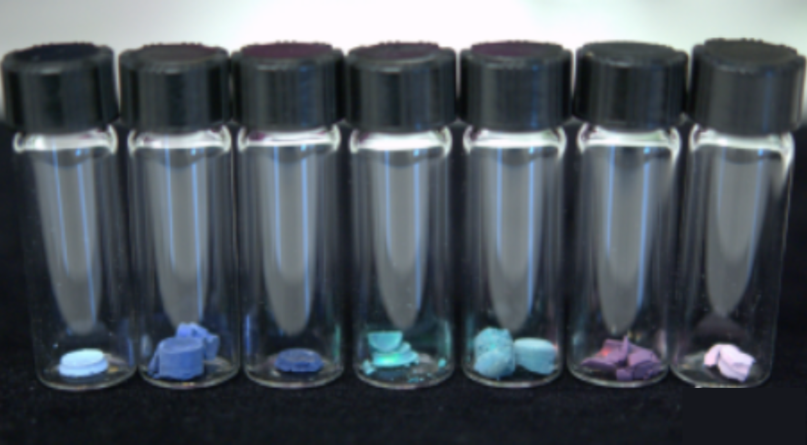

Designing angle-independent structural color
Structural colors show vivid hues as a result of light's interaction with nanoscale structures, rather than from absorbing pigments. These materials offer unique advantages like color tunability in response to stimuli and resistance to fading, which could be applied to cosmetics, displays, and environemntal sensors. However, designing a specific color is challenging due to the complexity of light scattering in disordered materials. To aid in designing structurally colored materials, we developed a Monte Carlo model that accurately predicts color by simulating light scattering in nanostructured films. Using our model output physical sample parameters, we recreated the color of a mountain bluebird's feathers with a reproducible and easy-to-fabricate structure, proving that this method is way to design a specific structural color from a limited set of materials.
Selected works:
V Hwang, AB Stephenson, S Barkley, S Brandt, M Xiao, J Aizenberg, VN Manoharan. Designing Angle-Independent Structural Colors Using Monte Carlo Simulations of Multiple Scattering. PNAS 2021, 118 (4), e2015551118.